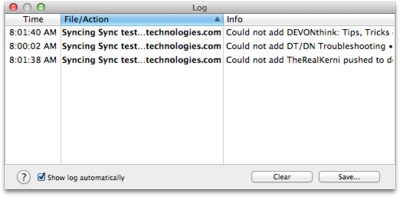

|
|
Log |
|
The Log panel displays warnings and error messages that occur, when importing files and folders and performing other actions. The panel shows the date of the message, the affected file, and a short information about what happened.  You can save the list to a text file with the Save button, and clear the log with the Clear button. To sort the log, click the column title. (Click again to reverse the sorting order.) Use the contextual menu or double-click the entry to reveal an affected file in the Finder. Uncheck Show log automatically to prevent the log popping up automatically. You can open the Log panel at any time using Window > Log . Right-click or click with ⌃ held to perform additional commands on log entries via the contextual menu, e.g., to reveal a logged item or move a logged item to the trash. Copy information from the log to the clipboard with Edit > Copy , ⌘C, or the contextual menu. |